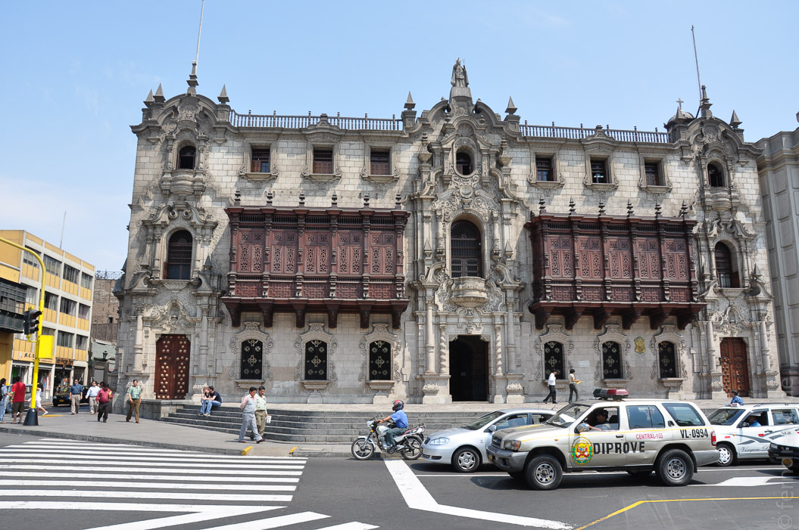
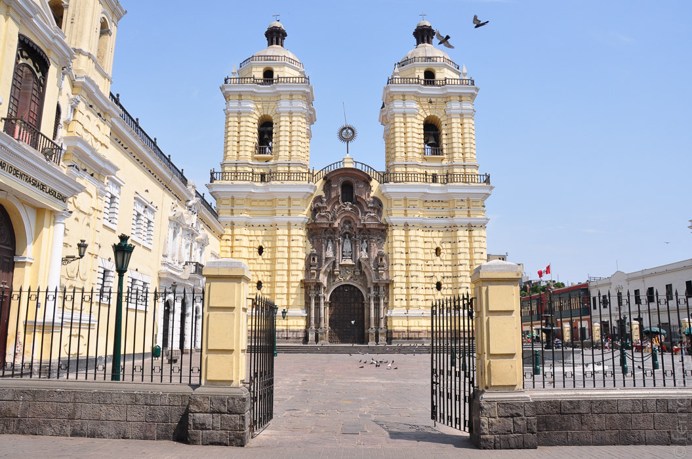
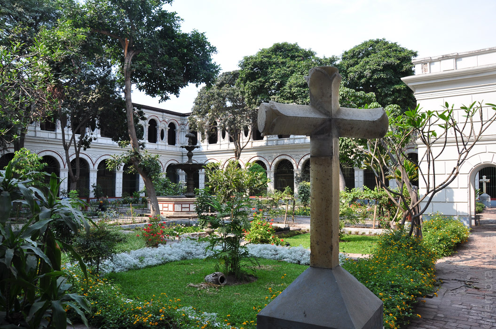
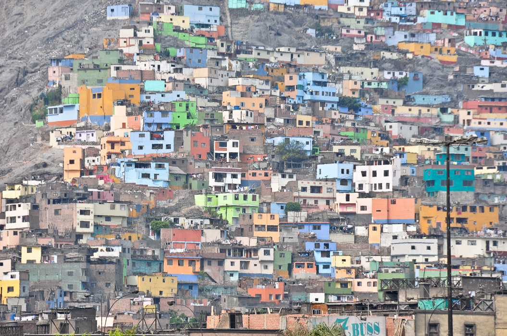
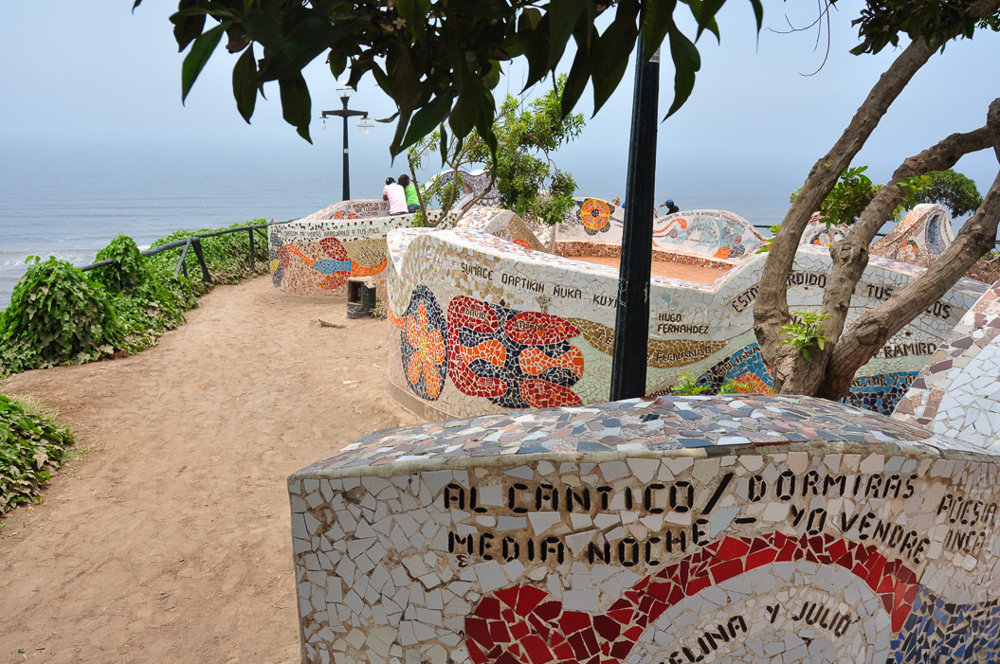
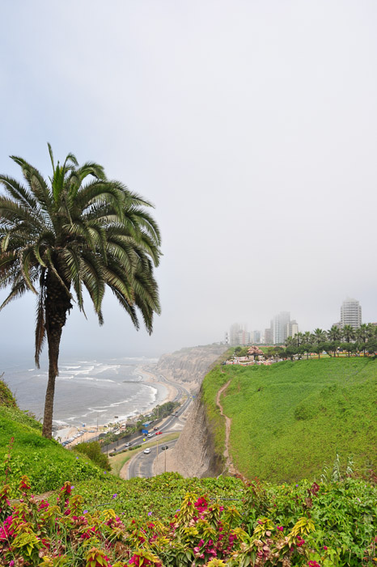
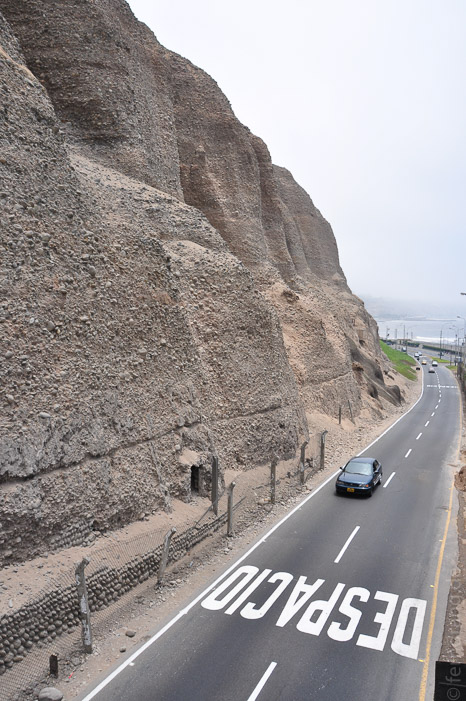

Von Pisco bis Lima sind es im Bus nur noch vier Stunden, von denen mindestens die letzte durch den wuchernden Moloch der Vorstädte führt. Auf dem Weg zu unserem Hotel konnten wir schon ein Gefühl für die Ausmaße der Stadt bekommen. Wir haben uns in Miraflores eingenistet, das eigentlich eine eigene Stadt ist, aber nahtlos an Lima grenzt. Hier ist es etwas schicker und hübscher, außerdem liegt es direkt am Meer.
Doch der Zugang zum Meer wird von einer hohen Klippe versperrt. Das Stadtgebiet liegt auf einem erhöhten Plateau, von dem aus es vielleicht 100m fast senkrecht herunter zum Strand geht. Leider gibt es für Fußgänger kaum Wege hinunter, so dass man immer ewig laufen muss. Am Strand herrscht auch ein eigenes Klima. Während es auf den Klippen eigentlich immer etwas neblig und frisch ist, wird es unten, wo die Surfer sich auf den Wellen abmühen, richtig heiß.
Der alte Stadtkern liegt weiter landeinwärts. Mit den supergünstigen Bussen, die alle größeren Straßen entlangfahren, braucht man fast eine Stunde durch das Häusermeer und den Verkehr. Rund um die Plaza de Armas liegen die üblichen Verdächtigen (Kathedrale, Rathaus), zu denen sich in der Hauptstadt noch der Regierungspalast gesellt. Ansonsten finden sich in den umliegenden Gassen die Klöster und Kirchen als Zweigstellen der konkurrenzbewussten Neue-Welt-Bekehrer.
Die Franziskaner haben einen besonders hübschen Konvent gebaut. Über dem Treppenhaus thront eine große, hölzerne Kuppel, die besser in einer Moschee aufgehoben wäre. Der maurische Schlag der alten spanischen Kirchen ist erstaunlich. Noch interessanter ist aber der Keller des Klosters. Denn in den Katakomben haben die Mönche eine umfangreiche Knochensammlung angelegt. Offenbar war es seinerzeit so schick in einem Kloster bestattet zu werden, dass man auf die geweihte Erde verzichten konnte. In großen Kästen liegen die Knochen hunderter Menschen, hübsch nach Art sortiert. Hier die Beine, dort die Schädel. In einem runden Loch haben sie aus Schädeln und Beinen ein tolles Muster gelegt, das an Mandalas erinnert.
Damit haben sich die Reize Limas aber auch schon erschöpft. Die Prachtstraßen haben Ostblock-Charme und was nicht ganz kaputt ist, wird gerade repariert. Bleibt nur die Flucht an die Küste. Hier kann man mit unzähligen Paaren auf den Klippen wandeln, wo sich fliegende Händler voll auf ihr Publikum eingestellt haben und Rosen und Kaugummis verkaufen. Nach familiärer Entwicklung finden sich die Paare 100m tiefer am Strand wieder, wo sie tätowiert und übergewichtig herumliegen und von ihrem Nachwuchs genervt werden. Zwischen den zwei Welten klebt das Einkaufszentrum Larcomar an der Klippe, in dem sich am Wochenende die Limeños um Tische der unzähligen Restaurants streiten.
      